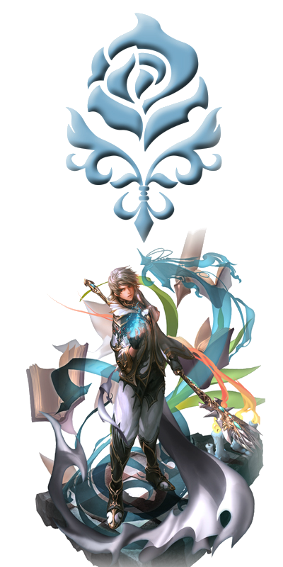

Humano
 Los Humanos son una raza de gran diversidad y potencial. Han forjado su propio destino y ahora sobresalen de entre todas las razas del continente. Esta clase se caracteriza por ser una la de las razas más equilibradas, ya que no poseen ni la mejor ni la peor de las características, lo que le da cierta ventaja sobre sus adversarios.
Human Fighter: Este Humano aprende habilidades de daga, arco y espada/maza básicas. Puede avanzar de profesión eligiendo entre:
Human Knight(20): Este Humano centrado en la defensa, tiene maestría en armadura pesada, escudo y espada/maza a una mano. Es capaz de drenar vida a su enemigo y también de curarse a sí mismo. Puede aturdir (stun) con su escudo, dejando a su enemigo sin poder realizar ningún tipo de acción durante un corto período. Puede avanzar de profesión eligiendo entre:
Paladin(40): Este Humano se centra en la defensa de su grupo, provocando que los enemigos le ataquen a él. Es especialista en combatir muertos vivientes (undead) y puede curarse a sí mismo y a los demás. Puede inmovilizar a sus enemigos durante un corto período evitando así que huyan. Avanza a:
Phoenix Knight(76): Este Humano pelea para proteger a sus compañeros más que para matar al enemigo, es capaz incluso de resucitarse a sí mismo con su habilidad "soul of phoenix".
Dark Avenger(40): Este Humano se centra en la defensa de su grupo, provocando que los enemigos le ataquen a él. Es capaz de invocar una pantera oscura para que lo auxilie en combate. Continúa desarrollando el drenaje, y otras habilidades ofensivas. Puede reflejar parte del daño físico que le sea provocado cuerpo a cuerpo. Puede inmovilizar a sus enemigos durante un corto período evitando así que huyan. Avanza a:
Hell Knight(76): Este Humano dirige su furia hacia su enemigo, dedicándose más a matar que a proteger.
Warrior(20): Este humano lleva armadura pesada y posee habilidad en lanza, espada y maza con el que puede aturdir (stun). Puede avanzar de profesión eligiendo entre:
Warlord(40): Este Humano mejora sus habilidades con lanza, pudiendo así dañar a varios enemigos al mismo tiempo con ella. Es el único capaz de aturdir (stun) en área (a varios enemigos a la vez, si se encuentran cerca los unos de los otros y tiene una lanza). Puede detectar el punto débil de varios tipos de monstruos. Avanza a:
Dreadnought(76): Este Humano se desenvuelve en combates contra múltiples enemigos.
Gladiator(40): Este Humano es especialista en uso de espadas duales y puede aturdir (stun) usando armas tipo maza. Puede detectar el punto débil de varios tipos de monstruos. Avanza a:
Duelist(76): Este Humano es el guerrero mas poderoso, ya que con su skill Sonic Storm puede dañar a varios a la vez, su skill mas poderosa es el Triple Sonic Slash. Ha alcanzado el perfecto manejo de las espadas duales.
Rogue(20): Este Humano es un hábil luchador dedicado al uso de la daga y el arco. Lleva ropa ligera, pero provoca un gran daño. Puede avanzar de profesión eligiendo entre:
Treasure Hunter(40): Este Humano es especialista en apuñalar a sus enemigos, acabando con ellos en muy poco tiempo, es el Humano Luchador que más daño hace. Puede desplazarse sigilosamente para que los enemigos agresivos no noten su presencia, hacerse el muerto y engañar a sus adversarios mediante 'trick' (habilidad que provoca que el enemigo pierda de vista al objetivo que tenia fijado). Avanza a:
Adventurer(76): Estos Humanos pueden identificar y tomar ventaja de las debilidades de sus enemigos con total precisión.
Hawkeye(40): Este Humano arquero de moderada defensa posee el mejor aguante y la peor velocidad. Puede aturdir (stun) usando su arco y subir su P.Attack y Critical mediante la skill Snipe. Avanza a:
Sagittarius(76): Este Humano arquero ha perfeccionado sus habilidades convirtiéndose en peligroso enemigo de personajes con baja defensa física.
Human Mystic: Este Humano usa ropa de baja defensa, aprende magia básica ofensiva, de apoyo y de recuperación. Puede avanzar de profesión eligiendo entre:
Human Wizard(20): Este Humano que utiliza magia ofensiva. Su velocidad conjurando la magia es superior a los Elfos Oscuros, pero inferior a los Elfos, y su daño es superior a los Elfos e inferior a los Elfos oscuros. Puede avanzar de profesión eligiendo entre:
Sorcerer/ss(40): Este humano posee de magia ofensiva, su elemento principal es el fuego, y posee numerosas magias en área (que hacen daño a múltiples enemigos). Avanza a:
Archmage(76): Este Humano ha perfeccionado su dominio de los elementos, y posee una gran capacidad destructiva.
Necromancer(40): Este Humano usa magia negra para sus objetivos, bien sea maldiciendo a sus enemigos, invocando muertos vivientes a partir de cadáveres, paralizando, envenenando, etc. Avanza a:
Soultaker(76): Este Humano ha perfeccionado su dominio de la magia negra relacionada con la muerte, y posee una gran capacidad destructiva.
Warlock(40): Este Humano tiene la habilidad de invocar cubos y animales mágicos para que le ayuden en el combate. Es capaz de provocar que la invocación de un enemigo traicione a su amo. Avanza a:
Arcana Lord(76): Este Humano ha perfeccionado su dominio en el poder que le lleva por el camino de la invocación.
Cleric(20): Este Humano utiliza magia de apoyo y de recuperación sobre sus aliados, y magia contra muertos vivientes. Puede avanzar de profesión eligiendo entre:
Bishop(40): Este Humano es el mejor curandero de todos con gran diferencia, pero su magia de apoyo es inferior a la del Prophet, Shillien Elder, Elven Elder, Warcryer, Overlord. Posee la mejor resurrección, incluso puede resucitar en masa a varios miembros de su alianza de una vez. Es capaz de provocar un daño considerable en muertos vivientes usando poder divino, y de dormir a sus adversarios con una gran rapidez. Puede herir el maná de sus adversarios y enviar las invocaciones de sus adversarios a otra dimensión. Avanza a:
Cardinal(76): Este Humano ha perfeccionado su dominio en la magia de recuperación, y posee una gran magia constructiva.
Prophet(40): Este Humano utiliza conjuros de alto nivel de apoyo, es el mejor buffer, pero sus curas son inferiores a las del Bishop, Shillien Elder, Elven elder. Posee maestría en todos los tipos de armadura, y más salud que todos los místicos salvo los orcos, lo que le convierte en alguien capaz de enfrentarse cuerpo a cuerpo. Puede enredar a sus enemigos al suelo, impidiendo así su movimiento. Es capaz de herir el maná de sus enemigos, enviar las invocaciones de sus enemigos a otra dimensión y teletransportarse rápidamente a la ciudad más cercana con una gran velocidad. Avanza a:
Hierophant(76): Este Humano ha perfeccionado su filosofía, convirtiéndose en un gran poseedor de magia constructiva.
Elfos
Los Elfos son la raza de la naturaleza, adoran a la diosa del agua, Eva. Se caracterizan por tener los cuerpos delgados y ágiles, orejas largas y rostros hermosos, son extremadamente rápidos tanto en ataques como en formulación de hechizos, pueden aguantar la respiración más tiempo debajo del agua y pueden saltar desde lugares más altos sin recibir un gran daño Sin embargo son de fuerza menor en comparación a otras razas.
Elven Fighter: Todos los Elfos Luchadores pueden ralentizar a los enemigos, curar sus heridas, envenenamiento y desangramiento. Aprenden habilidades de daga, arco, espada/maza básicas. Puede avanzar de profesión eligiendo entre:
Elven Knight(20): Este elfo centrado en la defensa posee maestría en armadura pesada, escudo y espada/maza de una mano. Puede avanzar de profesión eligiendo entre:
Temple Knight(40): Este Elfo está especializado en la defensa de su grupo, provocando que los enemigos le ataquen a él. Tiene la habilidad de convocar tres tipos diferentes de cubos. Alcanza una mayor defensa que los tanques humanos, tiene mejor constitución que el Elfo Oscuro y es el personaje que más bloqueos logra con el escudo. Esto se ve compensado con sus pocas skills agresivas. Puede inmovilizar a sus enemigos durante un corto período evitando así que huyan.
Eva's Templar(76): El Eva's Templar logra el perfeccionamiento de la capacidad defensiva, teniendo pocas habilidades agresivas, es compensado con la habilidad de reflejar Curses (maldiciones) y obtener mas defensa y movimiento.
Swordsinger(40): Este Elfo canta para inspirar, ayudando a su grupo, ya que sus cantos aumentan las características defensivas en su mayoría durante unos minutos. Puede inmovilizar a sus enemigos durante un corto período evitando así que huyan.
Sword Muse(76): La última profesión de éste, aprende a levantar la energía y habilidades de sus aliados con su hermosa voz, la cual lo convierte en un gran apoyo en las batallas; los cantos se especializan en la defenza y reutilización de las skills.
Elven Scout(20): Este Elfo es especialista en daga y arco, usa armadura ligera, de moderada defensa. Puede avanzar de profesión eligiendo entre:
Plains Walker(40): Este Elfo, que usa ropa ligera, de mediana defensa, es el daguero con una mayor velocidad de ataque y mayor probabilidad de éxito en las puñaladas comparándole con el Elfo Oscuro o el Humano, pero con una fuerza menor. Sabe fingir su muerte así como desplazarse sin que se note su presencia. Es el personaje con la mejor evasión (capacidad de esquivar los ataques físicos).
Wind Rider(76): Al igual que el Adventure este personaje se masteriza en la utilización de dagas, y con la destreza en estatus básicos lo convierten en un enemigo de temer, teniendo gran capacidad en el asesinato; para equilibrar esta habilidad tiene pocos puntos de CON.
Silver Ranger(40): Este arquero tiene la mejor puntería, velocidad de ataque y probabilidad de dar golpes críticos, aunque provoca un daño inferior a los otros arqueros. Puede aturdir (stun) usando su arco.
Moonlight Sentinel(76): Este arquero logra gran capacidad en el ataque con skills de rango, tiene gran velocidad al correr y excelente precisión, para su desventaja tiene poco poder físico (STR)
Elven Mystic: Este Elfo usa ropa de baja defensa y posee la mejor velocidad al hacer las magias. Aprende magias básicas ofensivas, de apoyo y de recuperación. Puede avanzar de profesión eligiendo entre:
Elven Wizard(20): Este Elfo especialista en magias dañinas. Puede avanzar de profesión eligiendo entre:
Spellsinger(40): Este Elfo utiliza el agua como su elemento de ataque. A diferencia de los otros nukers, las principales magias de éste mago no pueden ser bloqueadas con el escudo. Posee la mejor velocidad de ataque de los magos, pero la menor capacidad de daño.
Mystic Muse(76): El Mystic Muse logra el dominio total del elemento agua, causando gran daño a sus enemigos y teniendo gran velocidad de casting. Tiene grandes capacidades Destructivas.
Elemental Summoner(40): Este Elfo puede convocar cubos y unicornios para que le asistan en combate. Es capaz de provocar que la invocación de un enemigo traicione a su amo.
Elemental Master(76): Domina el poder mágico en su totalidad, en base con sus minion o summons, y posee un gran poder de daño en área.
Elven Oracle(20): Este Elfo se especializa en magias de apoyo y recuperación. Puede avanzar a:
Elven Elder(40): Este Elfo posee magia de apoyo para su grupo y es el mejor curandero y resucitador después del Bishop (Obispo). Posee magia divina ofensiva que puede ser usada contra muertos vivientes (undead), y puede dormir a sus adversarios rápidamente. Es capaz de enviar invocaciones enemigas a otra dimensión y de teletransportar a todo su grupo a la ciudad más cercana con una extrema rapidez.
Eva's Saint(76): Esta profesión perfecciona su poder curandero sin sobrepasar el del cardinal, es capaz de drenar con gran velocidad el maná de los enemigos y se convierte en el asistente perfecto de los magos tipo nuker, dando el poder de antiguos hechiceros con el Profecy Of Water.
Elfo Oscuro
Los Elfos Oscuros fueron elfos, pero decidieron aprender magia oscura para enfrentarse a los elfos de la luz, separándose así de ellos.
Dark Elf Fighter: Los Elfos Oscuros Luchadores poseen la mejor fuerza y la peor constitución, por lo que destacan en el daño y carecen de aguante. Pueden drenar la salud, disminuir el ataque físico o la defensa física, ralentizar mediante hielo, envenenar y desangrar a sus oponentes. El Elfo Oscuro Luchador aprende habilidades básicas de daga, arco y espada/maza. Puede avanzar de profesión eligiendo entre:
Palus Knight(20): Este Elfo Oscuro centrado en la defensa posee maestría en armadura pesada, escudo y espada/maza de una mano. Puede avanzar de profesión eligiendo entre:
Shillien Knight(40): Este Elfo Oscuro se centra en la defensa de su grupo, provocando que los enemigos le ataquen a él. Posee maestría en el manejo de espada de una sola mano y en armadura pesada. Puede invocar tres tipos distintos de cubos para que le auxilien en el combate, inmovilizar a sus enemigos durante un corto período evitando así que huyan y paralizarles completamente mediante un rayo.
Shillien Templar(76): El Shillien Templar ha perfeccionado su forma de combate, aunque se basa en la defensa, también puede causar graves daños a sus enemigos, posee la capacidad de reflejar ataques muy fuertes, de volverse más resistente durante un tiempo determinado y capaz de invocar un nuevo cubo que lo auxilia en combate.
Bladedancer(40): El Bladedancer, antes llamado Dark Gladiator usa principalmente espadas duales para incrementar el poder de su party por medio de unos bailes con las espadas. Él apoya a su party durante la caza incrementando su poder de ataque con Dance of Warrior y Dance Of Mystic a los guerreros y los magos respectivamente. El Bladedancer también puede incrementar la oportunidad de lograr ataques críticos de los guerreros con Dance of Fire. Las espadas dobles le proporcionan una velocidad media pero el elfo oscuro con esta profesión no contiene ninguna habilidad adicional para ellas, ya que de por si, es relativamente veloz y no la necesita.
Spectral Dancer(76): Luego de mucha práctica, el Elfo, aprende a hacer danzas mortales, aumentando así los ataques críticos mágicos, el uso de la danza Shadow, la cual hace a la party indetectable antes los mobs o monstruos, aumentando las capacidades del grupo.
Assasin(20): Los Dark Elves que prefieren usar arcos o dagas se convierten en Assassins. Son guerreros sigilosos que usan arcos o dagas y armaduras ligeras para moverse con más facilidad. El estilo de juego es similar al del Rogue. Comparados con los Rogues, los Assassins tienen un ataque superior y además acceso a magias y habilidades enfocadas a causar o incrementar el daño a sus enemigos.
Abyss Walker(40): Estos Elfos Oscuros son capaces de provocar el mayor daño físico, con sus mortíferas puñaladas. Puede confundir a sus adversarios haciéndoles perder de vista su objetivo y desplazarse silenciosamente sin ser visto. Su Tercer Cambio de Profesión es:
Ghost Hunter(76): Es la tercera profesión del Elfo Oscuro Daguero, sus ataques están mejorados y puede infligir un fuerte golpe con un nuevo Blow, puede aturdir a sus enemigos, y aumentar la probabilidades de Blow.
Phantom Ranger(40): Este Elfo Oscuro es especialista en combate con arco y técnicas oscuras relacionadas con éste, como una habilidad que le permite hacer mayor daño a su enemigo cuanto peor sea su estado de salud. Es el arquero que provoca más daño pero con menos aguante. Puede aturdir (stun) usando su arco.
Ghost Sentinel(76): Es el arquero con más ataque pero también es el que pega más lento y tiene muy poco CON(puntos de vida y CP)
Dark Mystic: Este Elfo Oscuro usa ropa de baja defensa y posee magias básicas ofensivas, defensivas y de recuperación. Puede avanzar de profesión eligiendo entre:
Dark Wizard(20): Los Magos Oscuros poseen una gran potencia en sus hechizos, pero tardan bastante en realizarlos. Puede avanzar de profesión eligiendo entre:
SpellHowler(40): Elfo Oscuro místico especialista en ataques con el elemento de aire, y el que posee ataques más poderosos. Sin embargo, tarda más tiempo en formular los hechizos, y agota su maná con rapidez.
Storm Screamer(76):EL elfo oscuro ha conseguido el mayor domínio del elemento aire, demostrándolo así con su habilidad final, el ciclón.
Phantom Summoner(40): Este Elfo Oscuro invoca cubos y criaturas del inframundo para atacar a sus enemigos. Es capaz de provocar que la invocación de un enemigo traicione a su amo.
Spectral Master(76): El spectral master ha llegado ha dominar las artes de invocación sin problemas, invoca la criatura del inframundo más poderosa el spectral lord.
Shillien Oracle(20): sacerdote de Shilen, la Diosa de los Elfos Oscuros, desarrolla magia de apoyo y recuperación. Puede avanzar a:
Shillien Elder(40): Este Elfo Oscuro es capaz incrementar las características físicas y espirituales de su grupo. Su función es más de apoyo que ofensiva o de recuperación. Puede enredar a sus enemigos al suelo, impidiendo así su movimiento. Es capaz de herir el maná de sus enemigos y de enviar invocaciones enemigas a otra dimensión.
Shillien's Saint(76): A través de mucha meditación, el Shilien Elder avanza a su máxima potencia, pudiendo mejorar la resistencia a ataques elementales, devastando y bloqueando auras defensivas y poder mejorar a los aliados con el Profecy of Wind (Profecía del viento), la cual es la única Profecy, que no baja ningún status. Luego de mucho estudio, el Saint, puede aprender a enredar al suelo a los enemigos más próximos a este mientras que, progresivamente les disminuye el Hp.
Orco
La raza de Orc es la raza del fuego.Ocuparon grandes regiones, hasta perder en la guerra contra los humanos y elfos. Actualmente están viviendo en un área ártica en el norte del continente.
Su habilidad especial es que tienen una fuerte resistencia a las enfermedades y son prácticamente inmues al veneno. Su característica básica es que los orcos tienen una gran fuerza física. También se regeneran rápidamente, Sin embargo, son lentos y tienen una menor velocidad de ataque y de lanzamiento de hechizos. Tiene también una menor puntería y evasión
Orc Fighter: Todos los Orcos desde su juventud son entrenados para ser luchadores. Reciben un entrenamiento especial en el manejo de la doble espada. Su estilo de juego es similar a los otros fighters pero teniendo en cuenta de su baja destreza. Por su fuerza física y su velocidad de recuperación, éste es un buen personaje para el jugador principiante.
Orc Raider(20): Los Raiders son luchadores quienes han pulido su habilidades en la Guerra. Son la principal fuerza de lucha de los Orcos. Su estilo de juego es similar a los Warriors, sin embargo, comparado a los Warriors, Los orcos usan más técnicas además de su fuerza física.
Destroyer(40): Este orco es una versión desarrollada del Raider, El Destroyer es un luchador experto quien se mantiene siempre vigilando al frente del campo de batalla. Usa torbellinos para barrer con sus enemigos cercanos y su incansable Sed de lucha atemoriza a sus enemigos hasta vencerlos. El Aura de los Destroyer causa que sus oponentes huyan con miedo y consternación.
Titan(76): Empuñando espadas pesadas o hachas, estos poderosos orcos guerreros son los mejores en ataques avanzados lo cual usan para pisotear a sus enemigos sin piedad.
Monk(20): El culto de la orden Religiosa de Paagrio es la religión de los Orcos. Entre los orcos, los ancianos seleccionan a los que quieren mejorar su fuerza física mas que sus técnicas con las armas. Estos orcos son entrenados como Monk. Los Monk quienes aceptan ir en la vía al poder y pactan con el Fuego no usan armas sino que aprenden a usar las técnicas de "Tangsu" para perfeccionar su fuerza física. Los Monk están caracterizados por sus rápidos ataques con las manos. También pueden una técnica que les permite reunir fuerzas mágicas y dispararlo a sus enemigos para debilitar y causar daño al oponente. Cuando están solos, los Monjes usan tatuajes para sólo usar armaduras ligeras y equipos para atacar con los puños y así causar daños mientras evaden los ataques de los enemigos. Cuando están en grupos, Son útiles para causar daños devastadores.
Tyrant(40): El Tyrant usa armas que lo ayudan en su "tangsu" personal. Es el mejor estudiante en el Templo del Poder y el Fuego. El Tyrant es famoso por usar técnicas como "Cohete de Poder", el cual explota energía y ataca a múltiples enemigos; "Garras Llameantes", el cual lanza fuertes puños de fuego; y "Puños de Perdición", el cual causa un daño extremo al oponente mientras consume una gran fuerza física.
Grand Khavatari(76): Se dice que los más grandes sacerdotes del Monasterio del Fuego poseen la suficiente fuerza para enfrentar a los "Titans". Éstos Maestros Tiranos poseen habilidades previamente vistas en "Titans", consiguiendo reales hazañas físicas. Son luchadores dedicados quienes han ganado el título de "Grand Khavatari", el guerrero con la "quinta esencia", estos practicantes del "Tangsu" prefieren tatuajes sobre las molestas armaduras en combate.
Orc Mystic: Los Orc Mystic son enviados al templo del fuego y el poder desde muy temprana edad donde aprenden la mágia de los Orcos, además de recibir entrenamiento de lucha básico puesto que su raza está predispuesta a la lucha, debido a su fuerza física.
Orc Shaman(20): Un Orc Mystic quien ha sido bendito por el Dios del Fuego puede seguir el pacto para convertirse en un Shaman. los místicos pueden bendecir a luchadores quienes van a la guerra y mejorar sus habilidades en combate. Pueden lanzar maldiciones para causar daño en las fuerzas enemigas. Hay cosas que sirven para asustar para encarar como una unidad militar con un Shaman en su lado. Pueden también lanzar maldiciones mágicas en los enemigos en combate y tienen algo de preferencia en combate físico.
Overlord(40): El Overlord es un Shaman quien es candidato a ser líder de la Tribu. Él crea su propio Clan y tiene diferentes tipos de magia para apoyar a los miembros de su clan. El Overlord lidera la raza de los orcos a través del "Sello de invierno", el cual reduce la velocidad de ataque de los enemigos alrededor y la "Visión de Paagrio", el cual incrementa la precisión de los miembros de su clan.
Dominator(76): Los dominators son los orcos que han alcanzado el máximo nivel en el poder de las tácticas. Los Dominators son líderes naturales y estrategas. Al ser dado el título de Dominator, el cual es otorgado solo a los Overlord más poderosos. Ellos lideran a orgullosos guerreros quienes pueden saltar el acantilado sin vacilar ni un poco acerca de su victoria.
Warcryer(40): El Warcryer es un Shaman quien ha recibido un entrenamiento especial en las canciones de Batalla, lo cual es lo mejor en el Sistema de hechizos de los Orcos. Él apoya a su alianza a través de canciones que tienen poderes mágicos. El Warcryer es una ventaja en un grupo a la hora de la batalla, gracias a su "Canto de la Furia", el cual incrementa la velocidad de ataque de los miembros de su grupo; Así como el "Canto de la Evasión", el cual icrementa la agilidad.
Doomcryer(76): En el pináculo de las canciones de la batalla, conjuros especiales en forma de canciones. Los Doomcryers son Warcryers perfectamente fluentes en canciones de batalla que llevan destrucción a sus enemigos. Con meras palabras, curan fuerzas con grandes poderes mágicos, levantan la moral, y maldicen a sus enemigos.
Enano
Los enanos son una raza nacida de la tierra, poseen una gran fuerza y física y una naturaleza curiosa que les hace crear nuevos objetos.
Después de la destrucción de los gigantes, la raza enana intentó siempre aliarse al bando más poderoso, pero la política de engaño y traición finalmente llevo a los enanos a permanecer aislados perdiendo la confianza de las otras razas.
Su sociedad puede compararse con una gran empresa más que a una cultura, y son reconocidos por su capacidad para mantener sus negocios y su organización. Los enanos se dividen en dos grandes clases, Scavengers que son aquellos que se encargan de buscar y recoger las materias primas y artesanos, que fabrican los productos a partir de materias primas.
Como habilidad especial es que el tamaño de su inventario es mayor que el de las otras razas y su penalización por peso es menor. La característica básica de los enanos es que poseen una gran fuerza física, es el único rango que les distingue de las otras razas.
La capacidad principal de los enanos es obtener artículos de monstruos, y componentes de objetos para ser vendidos o bien para ser transformados. Debido a su fuerza superior física, son unos excelentes tanques cuando van en party.
Dwarven Fighter
Artisan(20): En lugar de irse de aventuras, éste Enano prefieren quedarse en su trabajo y crear objetivos de los materiales reunidos por los Scavengers y Bounty Hunters. Cuando van a combate, usan técnicas de invocación para atacar su enemigo. A pesar de enfocarse en crear objetos, ésta clase puede convocar máquinas hechas para la batalla. Los Artisan tienen buenas técnicas de defensa y ataque, y generalmente luchan junto a sus máquinas invocadas.
Warsmith(40): Este Enano es capaz de crear cosas con un gran nivel de experiencia que ni los artesanos pueden igualar. Es regularmente bienvenido por los reyes de otros territorios, gracias a su única habilidad de crear armas de Asedio. El Warsmith también usa con frecuencia el torbellino en batalla, mientras poseen muchas habilidades relacionadas a la Manufactura.
Maestro(76): Los maestros artesanales poseen una extraordinaria técnica que les ha hecho ganar el título de Maestro. Incluso entre la asociación de líderes y señores, el llamar Maestro a alguien es extremadamente raro. Su resurrección se creía imposible por la visión de los antiguos enanos artesanos, pero recientemente un número de Warsmiths regresaron para re-exhibir las inexplicables habilidades que se creyeron perdidas.
Scavenger(20): En el gremio manufacturador de los enanos hay dos tipos de profesión. Los Scavengers viajan por todo el mundo para colectar materiales y crear objetos. También reciben entrenamiento en combate para que puedan hacer frente a los enemigos.
Bounty Hunter(40): Este Enano es un Veterano que posee la mejor habilidad de recolección. Incluso se dice que ha reunido escamas de Dragón. Es adepto en usar el "torbellino" en batalla. También posee muchas otras técnicas relacionadas a las actividades comerciales.
Fortune Seeker(76): Los Fortune Seeker son los Bounty Hunter que poseen las mejores técnicas de recolección. No hay pruebas fiables, pero se dice que los Fortune Seekers fueron capaces de arrancar Cabello del Bigote de Valakas. Aunque la leyenda de un gran número de Fortune Seekers ha sido transmitida sin confirmarse, el reciente retorno de unos cuantos Bounty Hunters viajeros hace creer que los Fortune Seekers regresarán.
Atte. Administrador:
 Siuk
Siuk